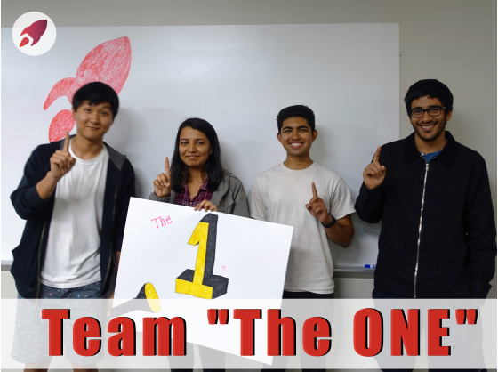
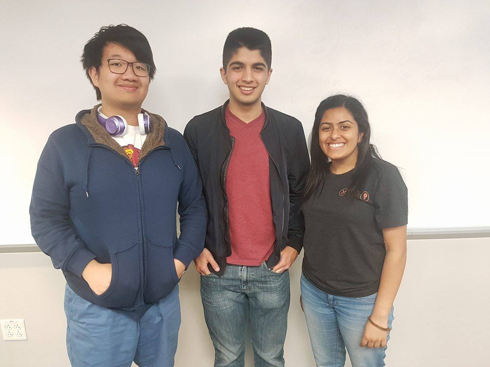
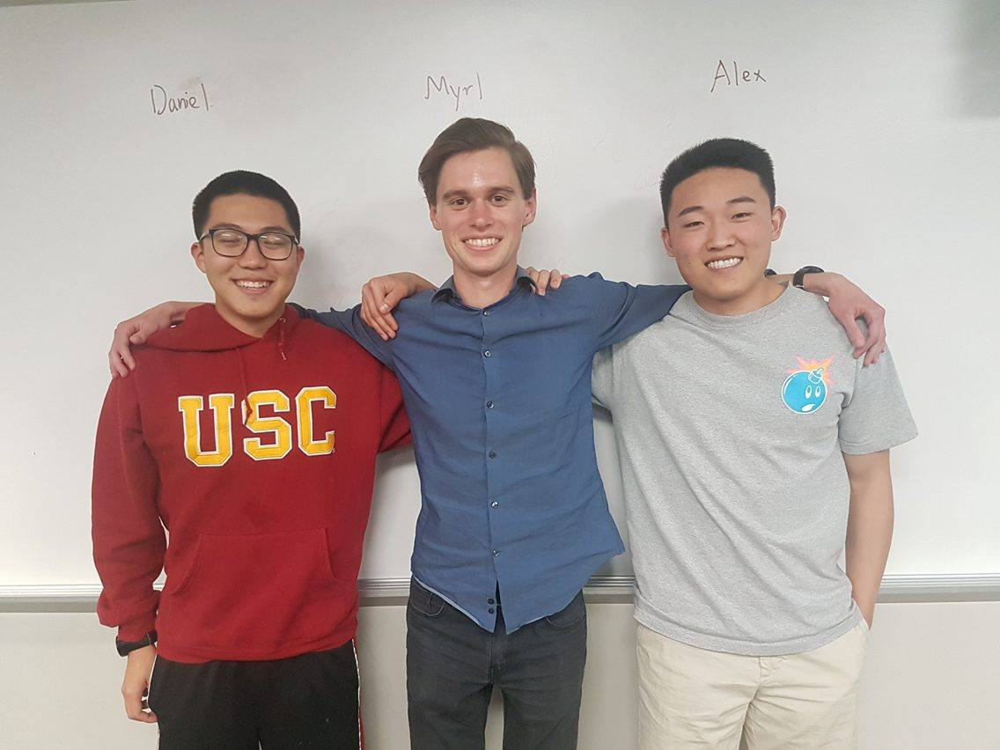
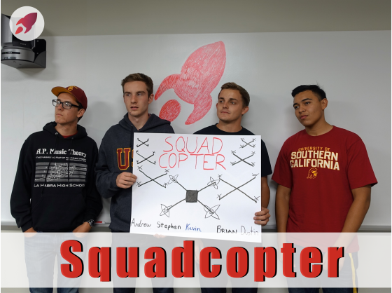
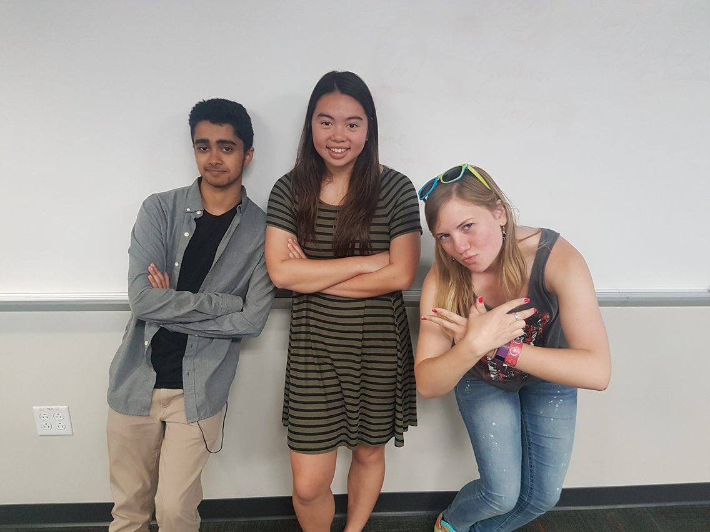
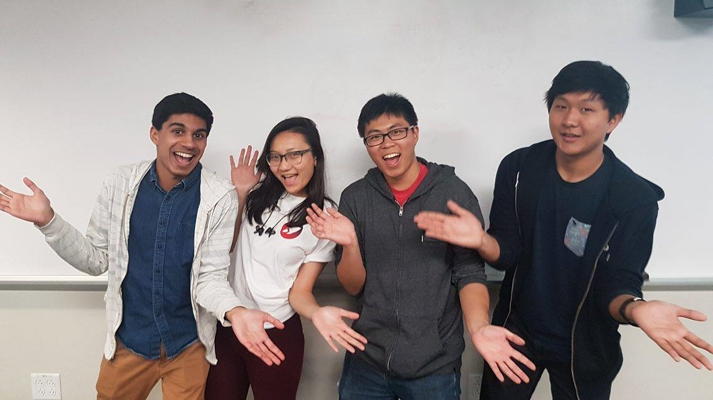

Team The One

This team consists of Shivangi Agarwal, Rohit Madan, Tony Jojan and Daniel Koo. This team, in addition to repping number one, is working on a device that uses ultrasound to help those who are visually impaired navigate and avoid obstacles. Ultrasound sensors return distance values based on where the device is pointed at. The distance is then translated into a sound metric, either by pitch or loudness. The device is intuitive to use because it works similar to how a flash light works with light and will serve the purpose of a more effective walking stick. This can be applied to many different impairments and robotic uses.Team Gautam City

On average, you spend ⅓ of your life asleep. This period of time is critical for your well-being, as it helps to improve memory, increase longevity, and stimulate intelligence and creativity. Thus, we are building to improve the quality of sleep, which directly correlates to a better living quality even when awake. Our team is enhancing the ordinary sleep mask to detect, analyze, and make decisions to achieve this task. Specifically, our mask is designed to accommodate for your current status in the sleep cycle and your alarm to wake you up at the perfect moment, using vibration sensors, LEDs, and a gyroscope. The data about your daily patterns is saved on a eeprom chip, and a bluetooth module transfers the information to a mobile app. It also checks in occasionally to ensure the sleep mask’s internal time is sync with the real time. With this mask, we hope to elevate the sleep experience.Team Fajita Fridays

We are building an autonomous robot that will be able to navigate itself through a course. This robot will consist of two wheels and two ball bearings, two servo-motors, and several ultrasound sensors. One sensor will rotate using a servo-motor in order to learn about its environment and collect information. The end goal is to have multiple of the same robot coordinate with one another in order to perform a certain task. FILLER TEXT FILLER TEXT FILLER TEXT FILLER TEXT FILLER TEXT FILLER TEXT FILLER TEXT FILLER TEXT FILLER TEXT FILLER TEXT FILLER TEXT FILLER TEXT FILLER TEXT FILLER TEXT FILLER TEXT FILLER TEXT FILLER TEXT FILLER TEXT FILLER TEXT FILLER TEXT FILLER TEXT FILLER TEXT FILLER TEXT FILLER TEXT FILLER TEXT FILLER TEXT FILLER TEXT FILLER TEXT FILLER TEXT FILLER TEXT FILLER TEXT FILLER TEXT FILLER TEXT FILLER TEXT FILLER TEXT Team Viperzzz
 We, the Viperzzz, are making the game of snake, but with a twist! We are using the Myo Armband to input the directional movements to control the snake. We are also displaying the game on a green 8x8 LED matrix for a more colorful interactive experience. The whole thing runs on a Raspberry Pi 3, powering 8 bitshift registers powering the total of 64 leds. The Raspberry Pi can read in the input from the Myo Armband’s accelerometer to figure out what direction the user wants to go in. This brings a new perspective on the classic game as well as possibilities for more applications and expansion. We are still in the process of bringing everything together, but so far we can run snake using Myo commands through the Raspberry Pi terminal.
We, the Viperzzz, are making the game of snake, but with a twist! We are using the Myo Armband to input the directional movements to control the snake. We are also displaying the game on a green 8x8 LED matrix for a more colorful interactive experience. The whole thing runs on a Raspberry Pi 3, powering 8 bitshift registers powering the total of 64 leds. The Raspberry Pi can read in the input from the Myo Armband’s accelerometer to figure out what direction the user wants to go in. This brings a new perspective on the classic game as well as possibilities for more applications and expansion. We are still in the process of bringing everything together, but so far we can run snake using Myo commands through the Raspberry Pi terminal.Team Squadcopter

Team Squadcopter is currently making a quad-rotor drone with some autonomous functions that will be controlled from a remote device. We are learning to connect the motors to a power supply and how to control the different motors to preform different functions. Additionally, we are learning how to communicate between two microcontrollers over a radio transmitter. Lastly, we will program the drone will be able to automatically correct its angle to keep itself from flipping over. We are building this helicopter because we want to learn about all the different steps necessary to create something that can fly and hover using rotors. While this is just a simple drone, it is an important step into learning both the science behind and engineering required for making drones. In the future, cheaper but more durable drones can pave the way for faster delivery services, emergency medical care, and exploration.Team Clawtch

Team Myo is currently working on a claw machine driven by an Arduino and controlled using a Myo, an armband that reads arm muscle movement. The claw machine is 2x2 feet and functions like a regular claw machine at an arcade game using custom 3D printed parts and wood. We are using an Arduino to control the parts controlling the claw, which is in turn controlled by the hand motions of the Myo wearer. Once we successfully hack the Myo, the possibilities are endless. From translating sign language to controlling large machines at the literal drop of your hand, we hope you will be as excited as we are about the Myo device.Team EmergenSCy

Our project, EmergenSCy, aims to create the most natural, most pleasant, and most appealing wake up experience by stimulating a gradual sunrise. By using an LED emitting a range of 250-300 lux, a gradation of color change from red to orange to yellow will naturally wake the user. In this two hour experience, your choice of music will play. Through a Rasberry pi, we will also incorporate IoT to mechanically turn on lights across the room to start your day. Ultimately, we aim to help people want to start the day, promote a positive morning attitude, and energize every morning. Our endeavors hope to make waking up, the most vital part of starting the day, the perfect experience for early birds and night owls alike.